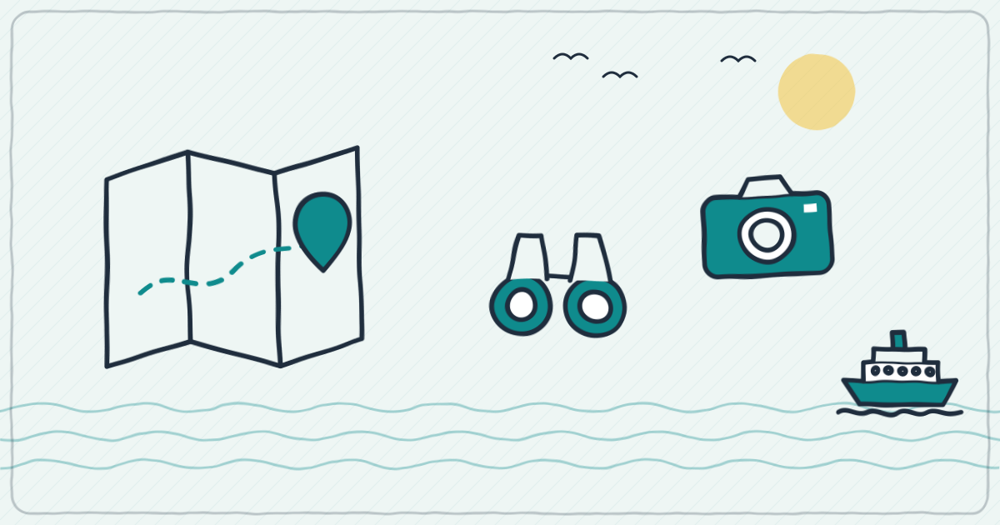

How Many Excursions Is Too Many on a Week's Cruise?
Book two or three paid excursions on a typical 7-night cruise with four or five port days, not one at every stop. Spend on experiences you cannot arrange on foot or by taxi, such as whale watching or a glacier flight, and leave the walkable ports and at least one port day open.

For most people on a 7-night cruise, two or three excursions is right. Booking a tour in every port feels thorough, but by the fourth early meeting time in a row the fun has drained out and the bill has doubled. The better plan is to spend on the two or three things that only that itinerary offers and walk, swim or rest everywhere else.
Why does a tour at every port backfire?
Port days cluster. A classic Alaska week has three or four ports back to back, and a Western Caribbean week does the same. A tour every day means an alarm at 6:30, a meeting point at 8, a coach, a wait, and a return in time for all-aboard, then the same again tomorrow. You end up paying to be herded through places you could have wandered.
The money is the other half. Caribbean tours at recent prices run about US$70–150 per person; Alaska tours US$150–250 and well beyond for helicopters and floatplanes. Two people, five ports, mid-range tours: easily US$1,000–1,500 on top of the fare. Three tours instead of five saves enough for a specialty dinner and a spa visit.
How many excursions per itinerary?
| Itinerary | Typical ports | Book | Do independently |
|---|---|---|---|
| 7-night Alaska from Vancouver or Seattle | Ketchikan, Juneau, Skagway, plus Victoria, Sitka or Icy Strait | 2–3 | Ketchikan's Creek Street, Skagway's main street, an evening stroll in Victoria |
| 7-night Western Caribbean from Florida or Galveston | Cozumel, Costa Maya, Roatán, Belize City | 2 | Beach clubs by taxi, waterfront walks |
| 7-night Eastern Caribbean from Florida | St. Thomas, St. Maarten, a private island | 1–2 | Beaches by taxi, the private island itself |
| 3- to 5-night Bahamas from Florida | Nassau, a private island | 0–1 | Nassau on foot, beach day at the island |
| 7-night Mexican Riviera from LA | Cabo San Lucas, Mazatlán, Puerto Vallarta | 1–2 | Cabo's marina, Puerto Vallarta's malecón |
| 7-night Mediterranean | Mostly historic cities, often far from the pier | 3–4 | One or two cities by train or on foot |
The Mediterranean is the exception where more is better, because ports like Civitavecchia and Livorno are an hour or more from the cities people came to see. Everywhere else, fewer tours and more wandering is the experienced cruiser's pattern. An Alaska budget page, what an Alaska cruise from Vancouver really costs, shows how the excursion line compares with the fare.
How do I decide which ports get a tour?
- Write down what is unique to each port. Whales in Juneau, the railway in Skagway, Mayan ruins from Costa Maya, Stingray City in Grand Cayman.
- Book only what you cannot reach on foot or by a short taxi. A beach day rarely needs a tour. A glacier does.
- Avoid repeats. One snorkel trip per week, not three. One zipline. One "island highlights" bus.
- Check the port hours. A five-hour call leaves no room for a seven-hour tour. Ships that dock at 7 am and leave at 1 pm are walk-around ports by default.
- Flag the tender ports. Where the ship anchors and ferries you ashore, you lose an hour each way to queues. Book the ship's tour there if you book at all, because tour groups tender first.
- Reserve the headline tours early. Whale watching, dog sledding and glacier flights sell out months ahead in peak season. Beach breaks never do.
Ship excursion or independent operator?
Ship tours cost more and run in bigger groups, but the ship waits if its own tour runs late and refunds you if the tour is cancelled. Independent operators are often 20–40% cheaper with smaller groups and better guides, and many are the same companies the ship sells, minus the markup.
The sensible split: book the ship's tour for anything far from the pier, in a port with chaotic traffic, or in a tender port, and book independently for close-in activities with a generous buffer. Whatever you book, aim to be back on board an hour before all-aboard, and carry the ship's port agent phone number from the daily program.
Adjusting for how you travel
- Families with young children: one booked activity per week, planned around nap times, with beach or pool days in between. Kids remember the ship's waterslide more than the fourth ruin.
- Energetic sightseers: four tours on a port-heavy week is fine if you accept the early mornings and book one easy half-day among them.
- Relaxers and repeat cruisers: one tour, or none. The quiet ship on a port day is the best spa and pool day of the week.
- Travellers with mobility, hearing or vision needs: tour descriptions list walking distance and terrain, and the ship's accessibility team will tell you which operators accommodate you. Smaller independent groups often suit better; cruising with hearing or vision loss covers what to ask, and for Alaska the wheelchair-accessible Alaska cruise guide names the adapted tours that load at the dock.
Whatever the count, photograph thoughtfully in markets and villages, since the manners in cruise photo etiquette apply ashore as much as on deck.
Want this checked for your own sailing? A licensed cruise consultant can price it up and answer questions for free, with no obligation.
Ask a cruise expert →The pattern that works
Look at the itinerary port by port, name the two or three experiences you would regret missing, book those early, and leave the rest of the week to walking, swimming, a postcard home and a half-empty ship. You will come home with the highlights and the energy to have enjoyed them.
Still wondering?
Is it a waste to stay on the ship during a port day?
No. A ship in port is half empty, the pools are quiet, spa appointments are discounted and lunch has no queue. Many experienced cruisers plan one ship day a week deliberately, often at the port that interests them least.
How much should a couple budget for excursions on a 7-night cruise?
For two or three tours each in the Caribbean, roughly US$400–700 per couple at recent prices, about C$550–950. Alaska runs higher, around US$600–1,000 per couple for two headline tours each, because whale watching, the White Pass railway and flightseeing are expensive.
Is it cheaper to book excursions through the ship or independently?
Independent operators are usually cheaper and run smaller groups, but the ship only waits for its own tours. If you book independently, pick well-reviewed operators that promise a return at least an hour before all-aboard, and avoid long drives in ports with unpredictable traffic.